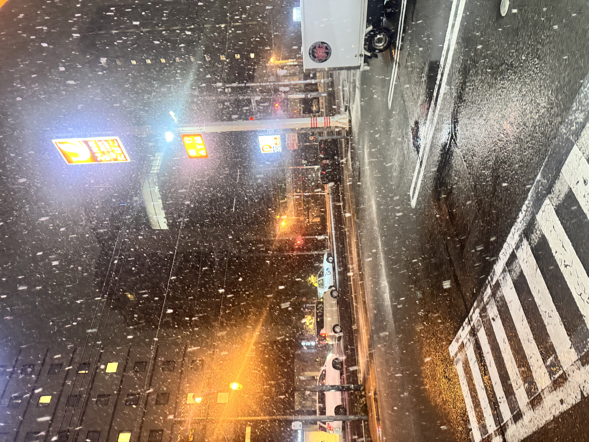
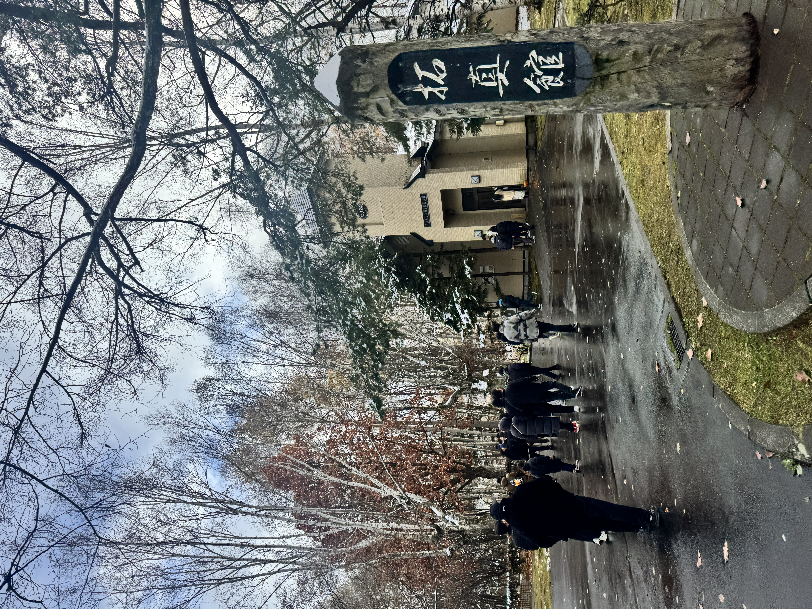
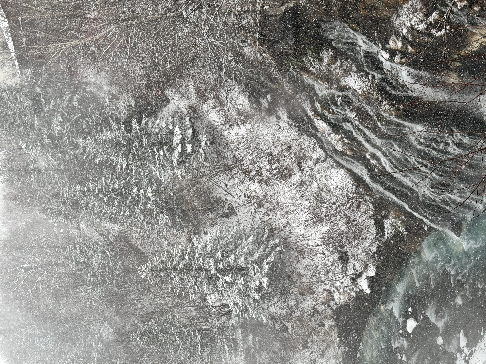
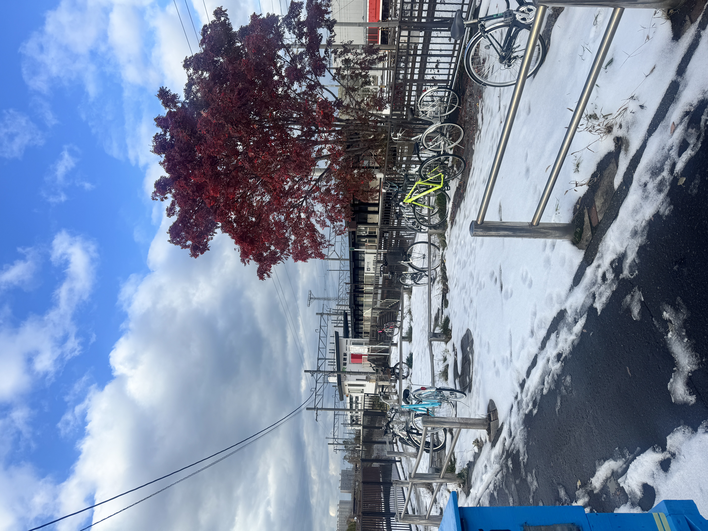
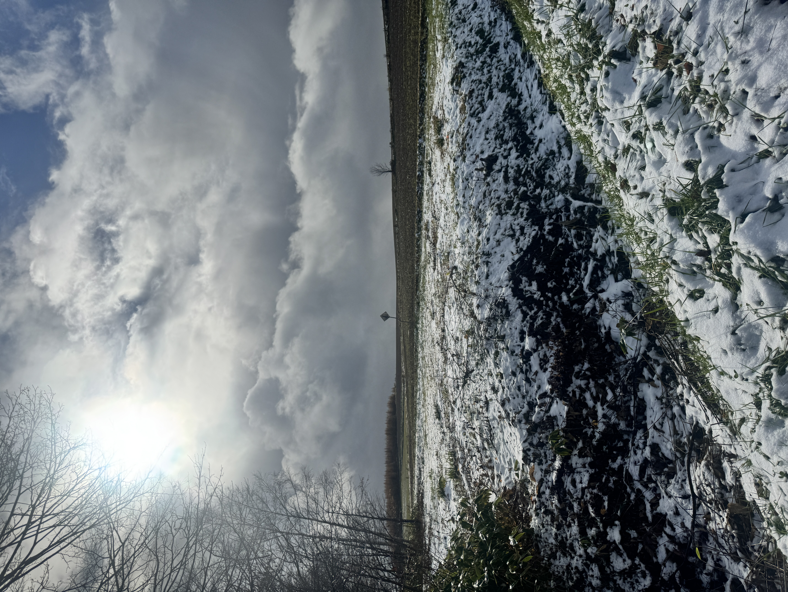

삿포로 투어 - 눈 오는 길도 너무 좋아요

삿포로 투어예요. 눈이 많이 와서 길은 조금 힘들었지만, 사진으로 남기니까 너무 좋았어요.
삿포로 투어 - 하얀 풍경이 예뻤던 날

어디를 봐도 하얗고 조용해서 겨울 여행 온 느낌이 확 났습니다. 춥긴 했지만 너무 좋아요.
삿포로 투어 - 버스 창밖으로 본 겨울

투어 이동 중에 창밖을 보는데 풍경이 계속 예뻤어요. 그냥 지나가기 아쉬워서 사진으로 남겼습니다.
삿포로 투어 - 오래 기억하고 싶은 풍경

사진을 다시 보니까 그날 분위기가 바로 생각나요. 삿포로 투어는 힘들어도 정말 기억에 남는 여행이었습니다.
삿포로 비에이투어 - 크리스마스 트리 보러 가는 길

우박이 오고 정말 난리만리였지만 크리스마스 트리는 정말 멀리 있고 조그맣게 보였어요.
도토리가 어쨌다고? 굴러간다고~
일본 여행 쇼츠만 틀었다하면 나오는 그 ! 노 ! 래 ! 맞습니다.
삿포로 오타루 운하 오르골 가게
오르골 가게에 있던 펭귄 인형~~~ 짱 커요.